从一道简单的逆向题到入门-教程
前言：
Blog重建，丢失好多帖子，找个机会补一篇Linux的逆向分析入门，给小白入门学习用，大佬绕过。
朋友喊帮忙看看,就顺手写下一篇逆向入门教程吧

分析
初步分析
文件信息:
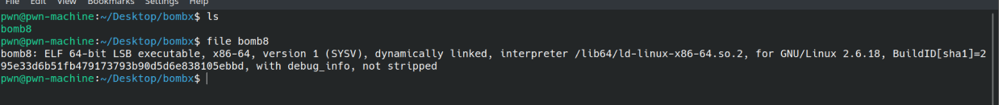
丢到IDA里面
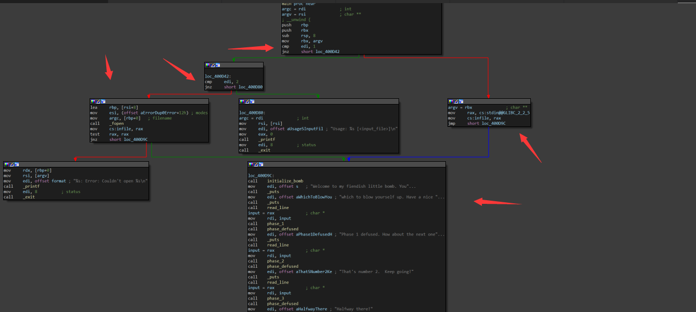
可以看到从命令行里传入两个参数，第一个就是该执行文件的当前path，第二个就是传入另一个文件，如果存在能打开那么就将输入重定向到infile, 否则重定向到stdin，也就是标准输入。
补充：
| 变量 | 值 | 信息 |
|---|---|---|
| stdin | 0 | 标准输入 |
| stdout | 1 | 标准输出 |
| stderr | 2 | 标准错误 |
initialize_bomb
此函数设置一个信号量
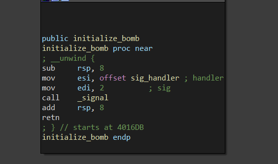
read_line
read_line函数就对输入做一下简单的处理，读取一行。因为之前有输入有可能是从文件获取，同时获取一下环境变量GRADE_BOMB的值。
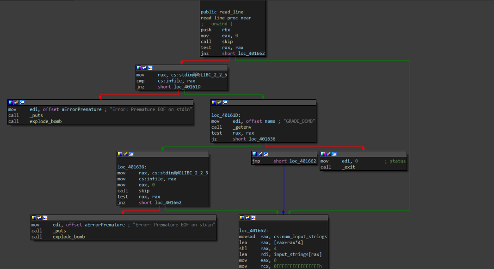
phase_1
这个就拿输入和
aWhyMakeTrillio全局变量做了一个比较so我们直接去拿下来就行了
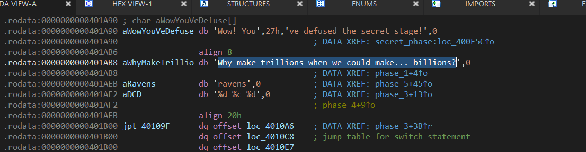
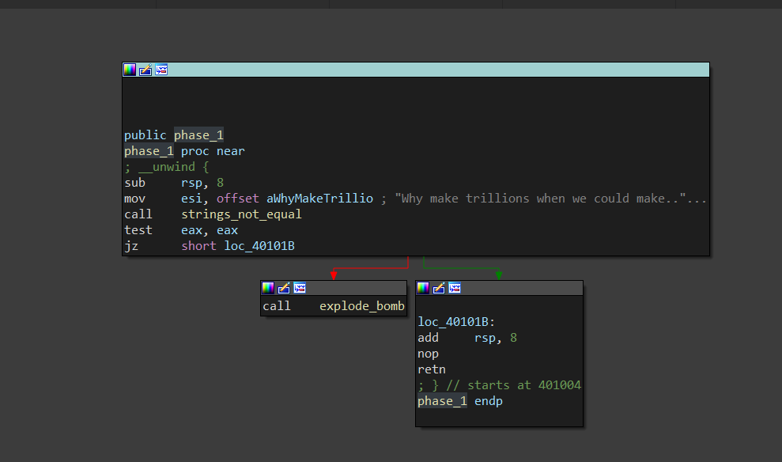
如果不等于这个值就会执行explode_bomb函数,直接退出程序
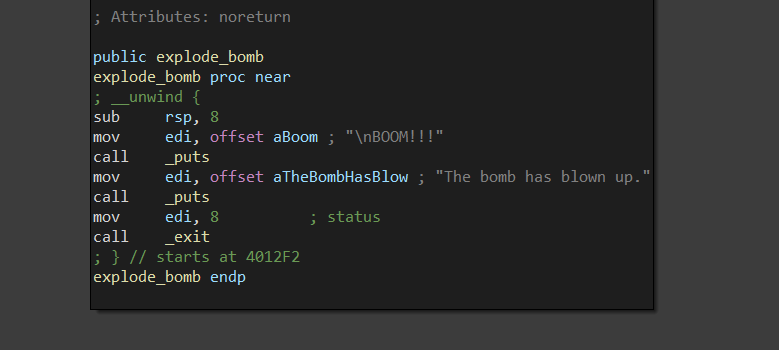
phase_2
读入6个数，然后前三个等于后个不相等则退出
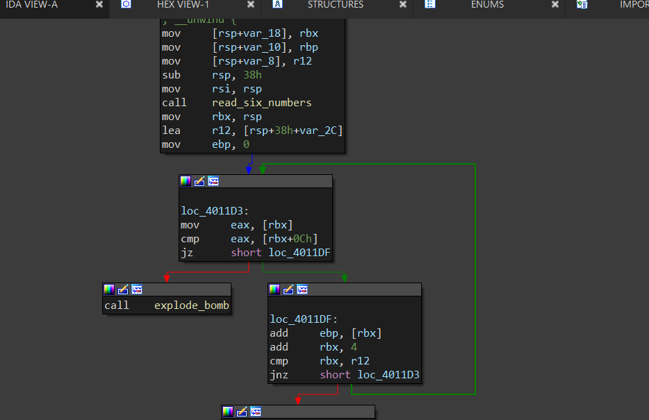
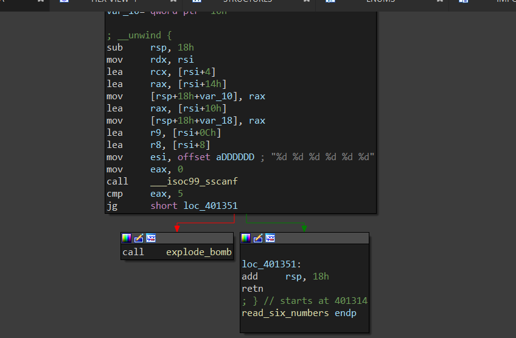
so 我们输入1 2 3 1 2 3就可以了
phase_3
是不是看着很吓人，实际上不要慌，他就一张switch表，我们先倒着看
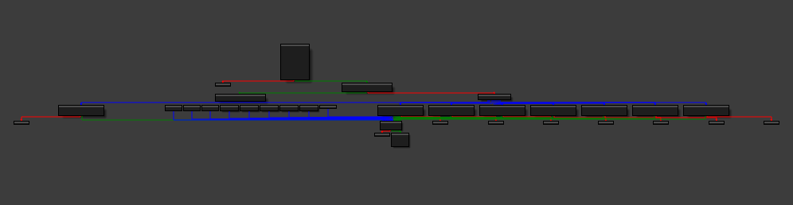
这里比较了var_11和al不相等则结束，
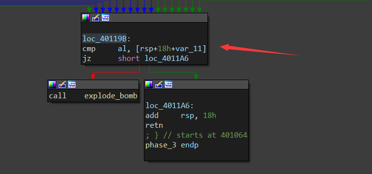
这里赋值了eax为’q’,也就控制了刚才的al,同时修改了var_10为84，但是进入条件是case 1
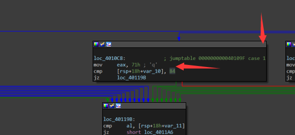
这里进行输入赋值由于是64位的，通常顺序是rdi, rsi, rdx, rcx, r8, r9, 栈
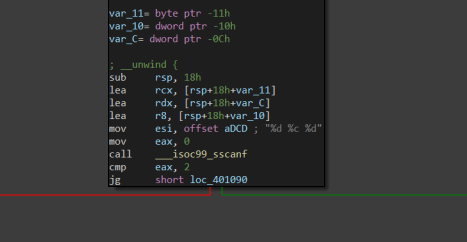
结合上面的简单分析，我们需要输入
1 q 84就能通过，实际上还可以看看其他表是做啥都差不多
phase4
就是输入一个数，然后经过一个
func4计算后和这个0x375F00比较不相等就退出，
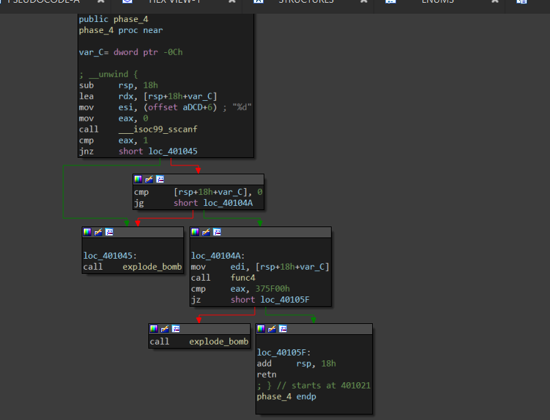
我们看看func4函数
实际上就一个递归计算阶乘很简单，imul指令是相乘嘛。
我们爆破一下就知道了
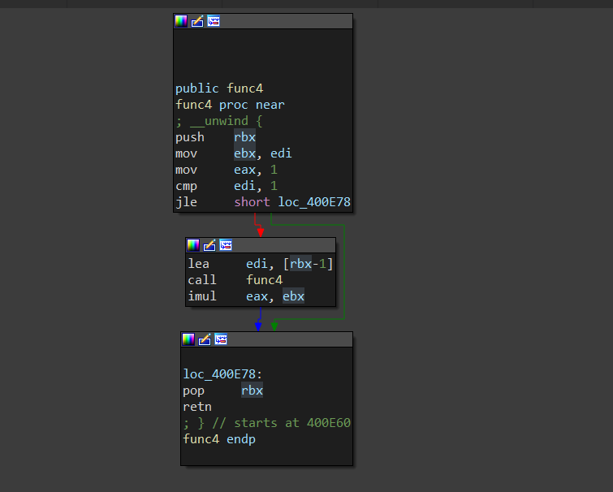
可以看到结果就是10
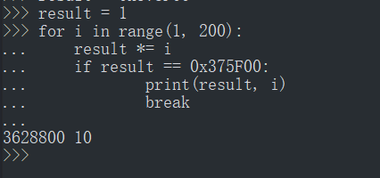
phase5
就把我们的输入当作索引取这个数组里面取值然后做比较需要等于
ravens
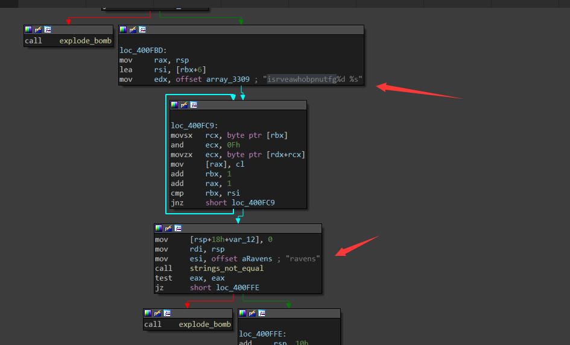
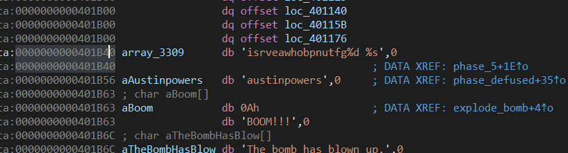
这是结果但这里有个坑，只能输入如6个字符，11是两个字符了，所以这里我们可以借pwntools来简单处理一下，比较方便
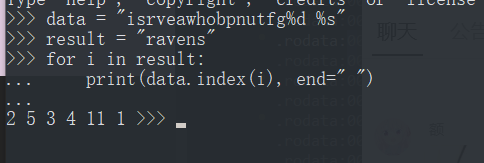
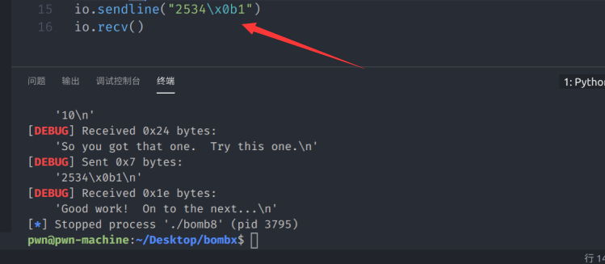
phase6
继续看这个函数用
func6计算一个node后结果在循环加8，总共加8次。
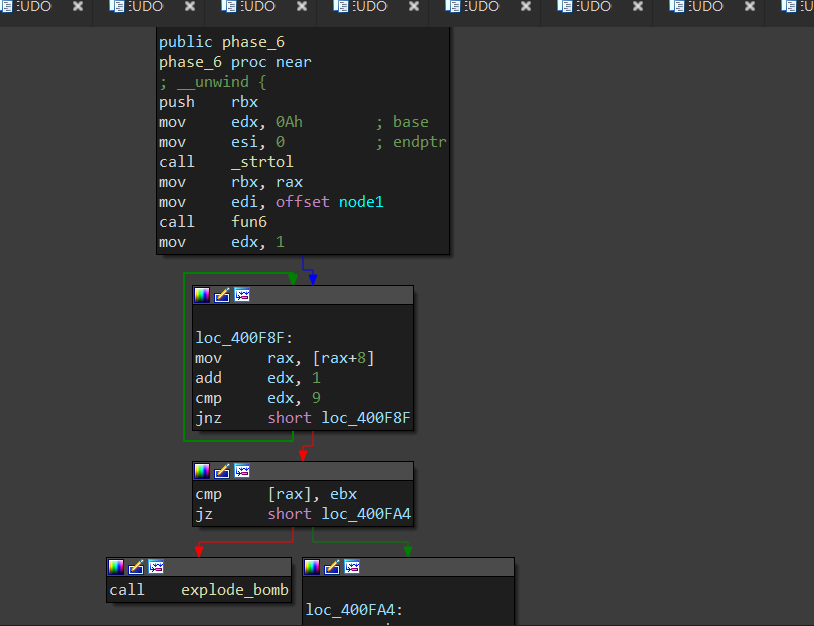
我们看看
func6函数，看上去计算有点点复杂，不过这里有个小技巧，我们的输入没有去参加计算，而是直接比较，so我们直接动态下个断点，dump出计算好的值就可以了,在上面那个图我们可以看见计算好的结果指针放在rax里面。
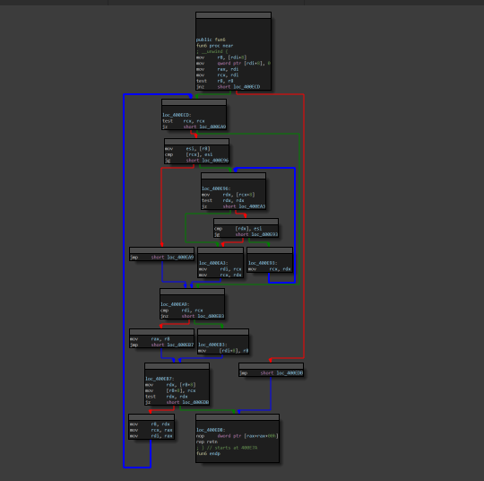
so,解决问题
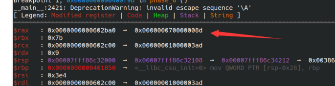
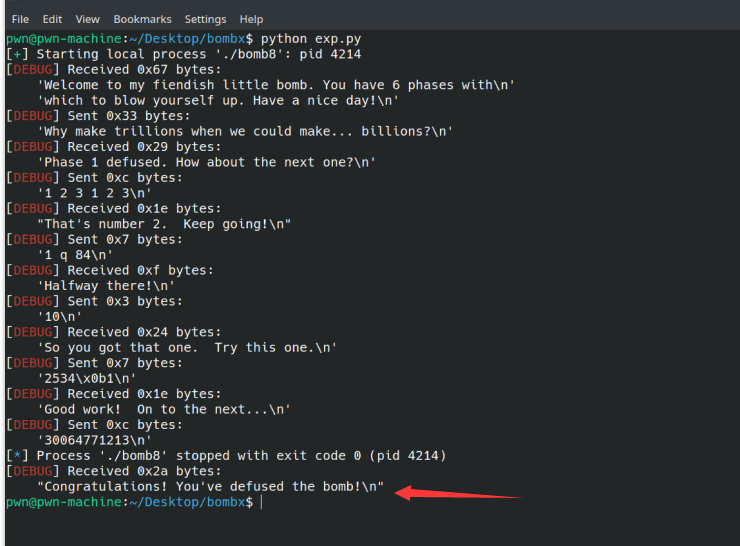
附上EXP：
from pwn import *
#
context.log_level = "DEBUG"
#
io = process("./bomb8")
io.recv()
io.sendline("Why make trillions when we could make... billions?")
io.recv()
io.sendline("1 2 3 1 2 3")
io.recv()
io.sendline("1 q 84")
io.recv()
io.sendline("10")
io.recv()
io.sendline("2534\x0b1")
io.recv()
# gdb.attach(io)
# io.interactive()
io.sendline(str(0x70000008d))
io.recv()到这里我们以及成功完成了6个函数的破解，但有个细节
phase_defused看第一张图，我们发现有这个函数存在，跟进去看发现可能是个隐藏关卡
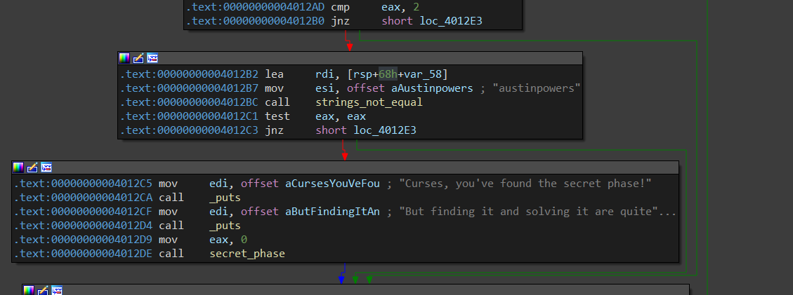
进入此函数需要该全局变量等于6
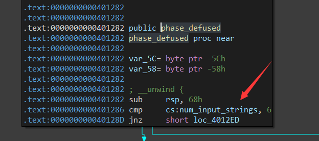
跟踪此变量我们发现有一个send_msg函数使用了他
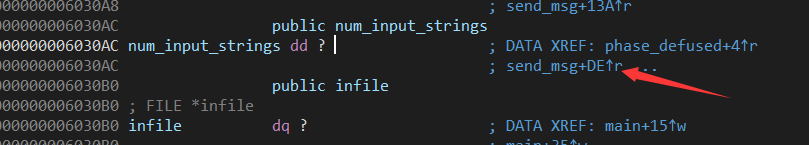
ida里面查看func_call,我并没有发现有函数调用了此函数，有可能在init函数里面动手脚，时间关系我就不在深入，有时间，我在回头看看。
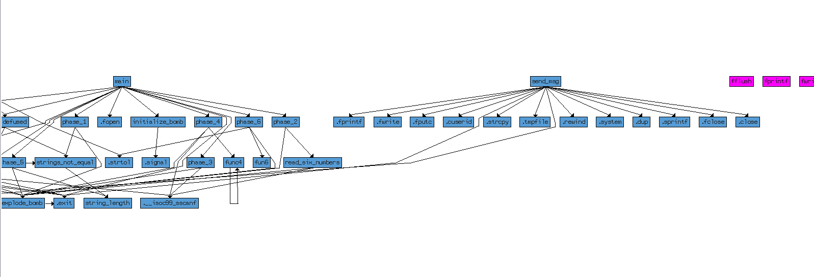